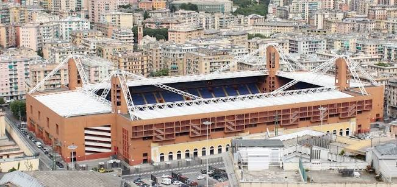
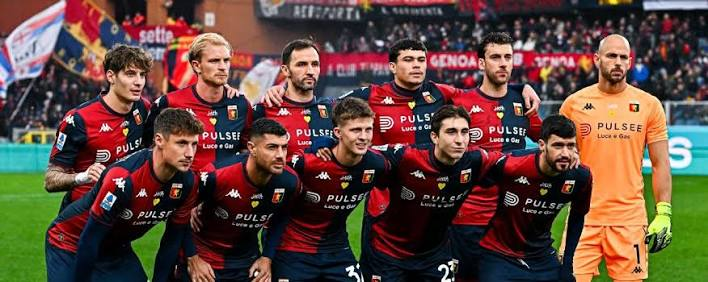

Founded
1893
Italy
Discover the history, stadium, legendary players, major trophies, records, and interesting facts about Genoa Cricket and Football Club.
Introduction
Genoa is a professional soccer club based in Genoa, Italy. Founded in 1893, Genoa is the oldest existing Italian soccer club and has played an important role in the early development of the sport in Italy. The club has a long history that reaches back to the beginning of organized Italian soccer.
Genoa plays its home matches at Stadio Luigi Ferraris. The stadium is located in the Marassi area of Genoa and is shared with city rival Sampdoria. It is one of Italy's historic soccer stadiums and is known for placing supporters close to the field.
The club is famous for its red and blue colors and is commonly known as the "Rossoblù." Genoa is also known as "Il Grifone," or "The Griffin," because the griffin is an important symbol of both the club and the city of Genoa.
Although Genoa has not enjoyed the same level of recent success as some of Italy's largest clubs, its history makes it an important part of Italian soccer. The club won numerous championships during the early years of the sport and helped establish soccer in Italy.

About the Club
Genoa Cricket and Football Club was founded on September 7, 1893. The organization was originally created by members of the British community in Genoa and focused on cricket and athletics before soccer became an important part of the club.
English doctor James Richardson Spensley became one of the most important figures in Genoa's early soccer history. He helped organize the football section and contributed to the growth of the sport at the club during a time when soccer was still new in Italy.
Genoa became the first champion of the Italian soccer championship in 1898. The early tournament was very different from today's Serie A and was completed in a much shorter format. Genoa defeated Internazionale Torino in the final to become Italy's first national champion.
The club dominated the early years of Italian soccer. Genoa won six of the first seven Italian championships and established itself as the country's first major soccer power. Its success helped increase interest in the sport throughout Italy.
Genoa continued winning championships during the early 20th century. The club eventually collected nine Italian league championships, with its ninth title coming during the 1923-24 season. This remains Genoa's most recent Italian league championship.
Genoa also won the Coppa Italia during the 1936-37 season. The club defeated Roma in the final to earn another important trophy. However, later generations did not experience the same championship dominance that Genoa had enjoyed during the early years of Italian soccer.
The club has experienced both promotion and relegation during its long history. Genoa has competed in both Serie A and Serie B, but its loyal supporters have continued to follow the team through successful and difficult periods.
One of Genoa's most important traditions is its rivalry with Sampdoria. Because the two clubs share the city and the same stadium, their matches create a special atmosphere. The rivalry is known as the Derby della Lanterna, named after the famous lighthouse that is a symbol of Genoa.
Genoa's importance goes beyond its recent results. With a history beginning in 1893 and nine national championships, the club represents an important part of the development of Italian soccer and remains one of the country's most historic sporting institutions.

Club Details
1893
Genoa, Italy
Stadio Luigi Ferraris
Red and Blue
Club Record
Edoardo Catto is recognized as one of Genoa's greatest goalscorers and the club's historic all-time leading scorer, with 96 goals. He represented Genoa during the 1920s and 1930s and played during an important period in the club's history.
Catto was part of the Genoa team that won the Italian championship during the 1923-24 season. That championship remains the club's most recent top-division league title.
Success
Legendary Players
Genoa has had many important players throughout its long history, but no player has won the men's Ballon d'Or while representing the club.
Much of Genoa's greatest success came before the Ballon d'Or was created in 1956. The club's most dominant period occurred during the early decades of Italian soccer, especially before the modern Serie A era.
Did You Know?